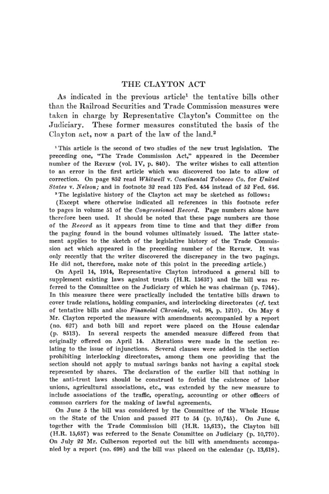

Stevens, 1915: o que a Lei Clayton muda no controle dos trustes?
Leitura: 8 min
Stevens reconstitui a tramitação da Lei Clayton, mostra onde ela duplica a Lei Sherman, onde vai além dela e por que a jurisdição dividida entre comissão e tribunais pode enfraquecer a nova Federal Trade Commission.


A Lei Clayton foi sancionada em 16 de outubro de 1914. Poucos meses depois, W. H. S. Stevens, da Columbia University, publica na American Economic Review o segundo de dois estudos sobre a nova legislação antitruste. O primeiro, sobre a Trade Commission Act, saíra no número de dezembro. Juntos, os dois textos formam um balanço do pacote de 1914 a partir da economia da concorrência.
Como o projeto passou pelo Congresso?
O deputado Clayton, presidente da Comissão de Justiça da Câmara, apresentou em 14 de abril de 1914 um projeto geral para complementar as leis contra os trustes. O texto reunia projetos preliminares sobre relações comerciais, holdings e diretorias entrelaçadas. A comissão o reapresentou com emendas em 6 de maio, e a Câmara o aprovou em 5 de junho, por 277 votos a 54.
No Senado, a comissão deu à Trade Commission e à Interstate Commerce Commission o poder de fazer cumprir as seções sobre discriminação de preços, diretorias entrelaçadas, holdings e contratos de exclusividade, e eliminou as penas de multa e prisão de três dessas seções. O plenário suprimiu a proibição de discriminação de preços e, depois, adotou um substitutivo para a seção de exclusividade. O projeto passou no Senado por 46 votos a 16.
A comissão de conferência apresentou seu relatório em setembro. No Senado, o senador Reed, do Missouri, atacou a eliminação das penas criminais e propôs devolver o relatório com instruções; a moção caiu por 35 a 25, e o relatório foi aprovado por 35 a 24. A Câmara o aprovou em 8 de outubro, por 244 a 54.
O que a lei proíbe?
Stevens divide as seções em três grupos: as que proíbem certos atos, as que tratam da execução e as que regulam processos judiciais, como as injunções. As proibições principais são quatro. A discriminação de preços entre compradores. Os contratos que condicionam a venda ou o arrendamento de bens a que o comprador não use produtos de concorrentes. A compra de ações de outra empresa. E as diretorias entrelaçadas em bancos e em empresas concorrentes de grande porte. Em todos os casos, a proibição vale quando o efeito possa ser reduzir substancialmente a concorrência ou tender a criar um monopólio.
Há exceções. Diferenças de preço por tipo, qualidade, quantidade ou custo de venda e transporte, ou feitas de boa-fé para enfrentar a concorrência, são permitidas. A compra de ações apenas para investimento, a criação de subsidiárias e certas aquisições de ramais ferroviários também ficam fora. Nos bancos, a regra alcança os de mais de certo porte e, nas cidades de mais de 200 mil habitantes, proíbe que um banco tenha como dirigente o de outro banco da mesma praça.
A lei apenas repete a Lei Sherman?
Em boa parte, sim, segundo Stevens. As sentenças contra a General Electric, no caso das lâmpadas, e contra a American Thread já proibiam preços mais favoráveis para tirar rivais do mercado e acordos de exclusividade com distribuidores. As decisões nos casos Northern Securities, do petróleo e do tabaco permitiam alcançar a compra de ações de concorrentes. Além disso, Stevens considera a discriminação de preços e os contratos de exclusividade formas de concorrência desleal, já proibida pela Trade Commission Act.
Mas ele aponta duas diferenças. A primeira está na redação: a lei proíbe os atos quando o efeito possa ser, e não quando seja, reduzir a concorrência. Se essa leitura estiver certa, a nova lei alcançará muitos atos que a Lei Sherman não poderia alcançar. A segunda está nas vendas casadas. A Trade Commission não poderia declará-las ilegais por conta própria, porque a Suprema Corte as aprovara, no caso de produtos patenteados, em Henry v. Dick.
Sobre as diretorias entrelaçadas, Stevens observa que nenhum tribunal as declarara ilegais, embora alguns planos de dissolução as tivessem proibido por algum tempo. Elas não são desleais em si, mas permitem que uma empresa compre a preços preferenciais. A proibição lhe parece correta porque ataca a condição que gera esses contratos, ainda que diretores de fachada, parentes e amigos possam produzir o mesmo resultado.
Quem faz a lei ser cumprida?
A seção 11 entrega a execução das proibições principais à Interstate Commerce Commission, para as ferrovias, ao Federal Reserve Board, para os bancos, e à Federal Trade Commission, para o restante do comércio, com o mesmo procedimento usado contra a concorrência desleal. Stevens vê duas vantagens: um processo administrativo com recurso direto e final à Circuit Court of Appeals, e poderes de investigação mais amplos que os do Departamento de Justiça.
A seção 15, porém, dá aos tribunais distritais jurisdição para impedir as mesmas violações, por ação dos promotores federais. A divisão foi intencional, segundo o próprio Stevens, que cita o deputado Webb, da comissão de conferência, e a carta de um membro da comissão de conferência. O problema é o recurso. As ordens da comissão terminam na Circuit Court of Appeals; as causas dos tribunais distritais, pela lei de 1903 que acelerou os processos antitruste, vão direto à Suprema Corte. Haveria duas instâncias finais para as mesmas práticas.
Stevens pergunta por que, depois de criar um mecanismo completo na comissão, se julgou necessário “prover outro meio de execução”. (“provide another means of enforcement”)
Que penas a lei prevê?
Quase nenhuma pena criminal. O projeto da Câmara previa multa e prisão para discriminação de preços, holdings, diretorias entrelaçadas e contratos de exclusividade, mas o Senado e a comissão de conferência as eliminaram. A execução depende de processos por desacato às ordens judiciais. A seção 14 torna os diretores responsáveis pelas violações penais da empresa, com multa de US$ 5.000, prisão de até um ano ou ambas, pena igual à da Lei Sherman, o que leva Stevens a duvidar de seu efeito.
Ele aprova outras regras: a sentença obtida pelo governo serve de prova inicial em ações privadas, a indenização em triplo passa a valer para todas as leis antitruste e qualquer pessoa pode pedir injunção contra dano iminente. Registra ainda, sem desenvolver, as seções sobre trabalho: a seção 6 declara que o trabalho humano não é mercadoria nem artigo de comércio, e as seções 17 a 20 limitam as injunções em disputas trabalhistas.
As conclusões de Stevens somam dez pontos. Entre eles, que a Trade Commission tem amplos poderes de investigação e autoridade administrativa limitada; que a jurisdição concorrente dos tribunais pode prejudicar o prestígio da comissão; que a confiança no desacato depende da severidade dos juízes, que na Lei Sherman foi pequena; e que os poderes de classificar empresas e prescrever relatórios podem permitir medir a eficiência relativa da concorrência e do monopólio.
Na minha leitura
Na minha leitura, o ponto mais forte do artigo é tratar a lei antitruste como desenho institucional, e não só como lista de proibições. Stevens mostra que as mesmas práticas podiam já estar proibidas e, ainda assim, a lei fazer diferença pela instância que aplica, pelo padrão de prova e pela via de recurso.
A expressão possa ser, que ele destaca, contém uma escolha econômica: agir antes de o dano à concorrência se consumar, com o risco de alcançar condutas inofensivas. E a proposta final, usar os relatórios das empresas para comparar a eficiência da concorrência e da combinação, coloca a política antitruste na dependência de medição, não apenas de princípio.
Glossário
- Discriminação de preços
- venda do mesmo bem a preços diferentes para compradores diferentes.
- Venda casada
- venda condicionada a que o comprador não use ou não compre produtos de concorrentes.
- Holding
- empresa que controla outras pela posse de suas ações.
- Diretorias entrelaçadas
- presença das mesmas pessoas nos conselhos de empresas concorrentes ou que negociam entre si.
- Jurisdição concorrente
- competência de dois órgãos diferentes para julgar a mesma matéria.
- Indenização em triplo
- direito da vítima de receber três vezes o dano causado por violação antitruste.
Fontes
- The Clayton Act — W. H. S. Stevens (Columbia University) (pp. 38–54). JSTOR · Internet Archive (PDF)
- Edição completa, com os demais artigos: Nº 134 do Arquivo.
Documento em domínio público (EUA, publicado antes de 1931), via JSTOR Early Journal Content e Internet Archive. Resumo e comentário do autor deste site, sem afiliação com a American Economic Association. Encontrou um erro? Escreva: a correção é publicada no próprio texto, com data.
← Conant, 1915: por que a bolsa de algodão foi parar sob o governo? ↑ Nº 134 · Março de 1915: futuros de algodão, ferrovias, crédito rural e a Lei Clayton